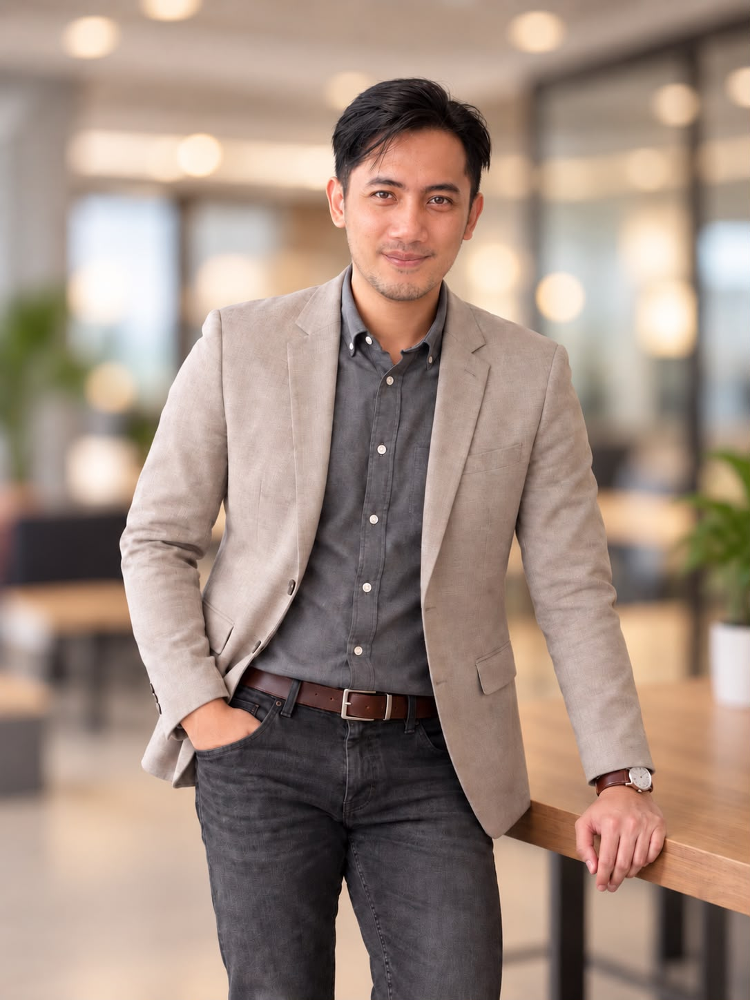

Menyusun dasar
pengelolaan risiko.
Saya menyusun kerangka manajemen risiko dari awal, dari tata kelola dan batas risiko hingga cara melakukan asesmen dan melaporkannya.
Halo, saya Dzulfikar. Di FMCG dan jasa keuangan, saya berfokus pada tiga hal: mengenali risiko, memperkuat kontrol, dan memperbaiki proses kerja.

Saya belajar Matematika, lalu melanjutkan MBA di ITB. Pengalaman kerja membawa saya dari perencanaan persediaan dan kepatuhan transaksi ke risiko operasional serta perbaikan proses bisnis.
Pengalaman di FMCG dan jasa keuangan membawa saya semakin dekat dengan proses bisnis sehari-hari. Saya menyusun kerangka risiko berbasis ISO 31000 dan COSO, memantau KRI, serta menyampaikan rekomendasi kepada pimpinan. Pekerjaan saya juga mencakup pengembangan aplikasi AppSheet dan SOP untuk membantu tim mencatat risiko, mengikuti mitigasi, dan memahami alur kerja.
Saya menyusun kerangka manajemen risiko dari awal, dari tata kelola dan batas risiko hingga cara melakukan asesmen dan melaporkannya.
Saya membangun aplikasi Google AppSheet yang menghubungkan catatan risiko dengan progres mitigasi, agar perkembangannya dapat diikuti secara berkala.
Saya mengembangkan SOP dan membantu pemilik proses menggunakan generator berbantuan AI untuk menyusun serta memperbarui dokumen.
Telusuri pengalaman kerja, pendidikan, dan pembelajaran yang membentuk perjalanan saya.
Berikut pengalaman yang bisa saya bawa untuk pengelolaan risiko, pengendalian internal, dan perbaikan proses di tim Anda.
Sedang mencari rekan di bidang risk management, internal control, atau business process improvement? Saya senang mendengar kebutuhan tim Anda dan berdiskusi tentang peran yang sesuai. Mari mulai lewat email.
fahlevi.dzulfikar@gmail.com ↗